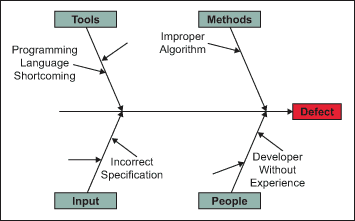
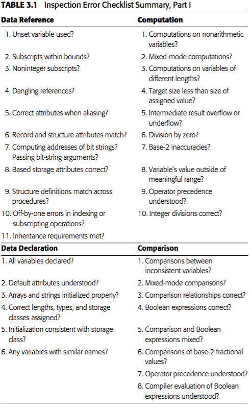
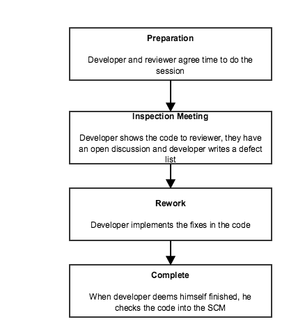

Although testing is one of the key QA activities, there are many
additional actions that could be taken in order to assure that the
quality of the product meets some targets. Some of them are going
to be analysed in this chapter.
Defect Prevention and Process Improvement
The best way to avoid defects is preventing them and the most common
technique for doing so is Defect Causal Analysis (DCA).
This type of analysis consists in identifying the causes of
defects and other problems and taking action to prevent them from
occurring in the future by improving the process and reducing the
causes that originate the defects.
DCA can be seen as a systematic process to
identify and analyze causes associated with the occurrence of specific
defect types, allowing the identification of improvement opportunities
for the organizational process assets and the implementation of
actions to prevent the occurrence of that same defect type in future
projects. DCA is used by many companies, for instance, HP has
extesively used it with very good results [[SOFTWARE-FAILURE-ANALYSIS-HP]].
There are multiple methodologies to implement a DCA system, but in
general, the following activities should be conducted in all of them:
Defect Identification:
Defects are found by QA activities specifically intended to detect
defects such as Design review, Code Inspection, function and unit
testing.
Defect Classification:
Once defects are identified they need to be classified.
There are multiple ways and techniques to classify defects, for
instance: Requirements, Design, Logical and Documentation. These
categories can be again divided in second and third levels
depending on the complexity and size of the product.
Orthogonal Defect Classification (ODC) [[ODC]] is one of the
most important techiques used for clasifying defects.
It means that a defect is categorized into classes that
collectively point to the part of the process which needs
attention, much like characterizing a point in a Cartesian
system of orthogonal axes by its (x, y, z) coordinates.
Defect Analysis:
After defects are logged and classified, the next step is to
review and analyze them using root cause analysis (RCA)
techniques.
As doing a defect analysis for all the defects is a big effort.
A useful tool before doing this kind of analysis is a Pareto chart.
This kind of charts shows the defect type with the highest
frequency of occurrence of defects. It shows the frequencies of
occurrences of the various categories of problems encountered, in
order to determine which of the existing problems occur most
frequently. The problem categories or causes are shown on the
x-axis of the bar graph and the cumulative percentage is shown
on the y-axis of the graph. Such a diagram helps us to identify
the defect types should be given higher priority and must be
attended first.
For instance, the following picture shows an example of a Pareto
diagram:
Pareto Diagram Example
Root-cause analysis is the process of finding the activity or
process which causes the defects and find out ways of eliminating
or reducing the effect of that by providing remedial measures.
Defects are analyzed to determine their origins. A collection of
such causes will help in doing the root cause analysis. One of
the tools used to facilitate root cause analysis is a simple
graphical technique called cause-and-effect diagram / fishbone
diagram which is drawn for sorting and relating factors that
contribute to a given situation.
It is important that this process uses the knowledge and expertise
of the team and that it considers that the target is providing
information and analysis in a way that helps implementing changes
in the prcoesses that help prevent defects later on.
For instance, the following picture shows an example of a Fishbone
diagram:

Fishbone Diagram Example
Defect Prevention:
Once the causes of the defects are known it is key to identify
actions that can be put in place to cut down these causes.
This can be achieved, for intstance with meetings where all the
possible causes are identified from the cause-and-effect diagram
and debated among the team. All suggestions are listed and then the
ones that are identified as the main reasons for causes are
separated out. For these causes, possible preventive actions are
discussed and finally agreed among project team members.
Process Improvement:
Once the preventive actions have been identified, they need to be
put in place and verify their effectiveness, for instance by
observing the Defect Density and comparing it with previous
projects.
You can find some examples and more details about this process at
[[DEFECT-PREVENTION-NUTSHELL]] and [[DEFECT-ANALYSIS-AND-PREVENTION]].
Code Inspection and Formal Verification
During many years, people considered that the only consumers of software
were machines and human beings were not intended to review the code
after it was written. This attitude began to change in the early 1970s
through the efforts of many developers who saw the value in reading
code as part of a QA culture.
Nowadays, not all the companies apply techniques based in reading code
as part of their Software Development (including QA) process, but the
concept of studying program code as part of defect removal preocess is
widely accepted as benefitial. Of course, the likelihood of those
techniques being successful depend on multiple: factors the size or
complexity of the software, the size of the development team, the
timeline for development and, of course, the background and culture of
the programming team.
Part of the skepticism for this kind of methods is because many people
believe that tasks lead by humans could lead to worse results than
mathematical proofs conducted by a computer. However, it has been
proven that simple and informal code review techniques contribute
substantially to productivity and reliability in three major ways.
We know that the earlier errors are found, the lower the costs of
correcting them and the higher the probability of fixing them
them properly. We have just studied in previous section that the
best way to reduce defects is preventing them, the second best
way to reduce them is by conducting code reviews that detect the
defects just while they are being injected.
Lower error-correction costs: when an error is found it is
usually located precisely in the code as opposed to black box
testing where you only receive an unexpected result. Moreover,
this process frequently exposes a batch of errors, allowing the
errors to be corrected later together. Computer-based testing, on
the other hand, normally exposes only a symptom of the error
(e.g. the program does not terminate or the program prints a
meaningless result), so developers need to identify the roots
behind the symptnm which makes errors to be detected and corrected
one by one.
This kind of technique changes also the mind of developers.
People reviewing code is also learning in parallel, people whose
code is being reviewed is not only fixing defects but learning
new techniques, paradigms, etc. that could be applied in future
projects.
Code Reviews are generally effective in finding from 30 to 70 percent
of the logic-design and coding errors in typical programs.
They are not effective, however, in detecting high-level design
errors, such as errors made in the requirements analysis process.
Note that a success rate of 30 to 70 percent doesn't mean that up
to 70 percent of all errors might be found but up to 70% of the
defects that are going to be detected (remember we don't know how
many defectsi are in a software).
Of course, a possible criticism of these statistics is that the
human processes find only the easy errors (those that would
be trivial to find with computer-based testing) and that the
difficult, obscure, or tricky errors can be found only by
computer-based testing. However, some testers using these
techniques have found that the human processes tend to be more
effective than the computer-based testing processes in finding
certain types of errors, while the opposite is true for other
types of errors. This means that reviews and computer-based
testing are complementary; error-detection efficiency will suffer
if one or the other is not present.
Different ways of performing code reviews exist and in the following
sections we are going to assess few of them.
Formal Code Inspection
For historical reasons, formal reviews are usually called
inspections. This is due to the work Michael Fagan conducted
and presented in his 1976 study at IBM regarding the efficacy of
peer reviews. We are going to called them Formal Code Inspection
to distinguish them from other types of Code Reviews.
There is always a inspection team that usually consists of four
people. One of them plays the role of moderator who should be an
expert programmer, but not the author of the program (he does not
need to be familiar with the software either).
Moderator duties include:
Distributing materials for, and scheduling, the inspection session.
Leading the session.
Recording all errors found.
Ensuring that the errors are subsequently corrected.
The rest of the team is the developer of the code, a software
architect (could be the architecture of the software) and a Quality
Assurance engineer.
The Inspection Agenda is distributed some days in advance of the
Inspect Session. Together with the agenda, the moderator
distributes the software, specification and any relevant material
to the inspection team so they can become familiar with the
material before the meeting takes place.
During the review session the moderator ensures that two key
activities take place:
The programmer describes, statement by statement, the logic of
the software. Other participants are free (and encouraged) to
raise questions in order to determine whether errors exist. It
is likely that the developer himself, instead of the rest of team,
is the one that find many of the errors identified during this stage. In other
words, the simple act of reading aloud a program to an audience
seems to be a remarkably effective error-detection technique.
The program is analyzed with respect to checklists of
historically common programming errors.
When the session is over, the programmer receives an error list
that includes all the errors that have been discovered. Hence, the
session is focused on finding defects not fixing them.
Despite that, in some occasions, when a problem is discovered, the
review team could propose and discuss some design changes. When
some of the detected defects require significant changes in the
code, the review team could agree to have follow-up meetings in
order to review again the code after the changes are implemented.
The list of errors is not only used by the developer in order to
fix them; it is also used by moderator to verify if the error
checklist could be improved with the results.
The review sessions are typically very dynamic and hence the
moderator should be responsible not only for reviewing the code
but also to keeping it focused so time is used efficiently
(these sessions should be of 90-120 minutes maximum).
This kind of approaches requires of the right attitude, specially
from the developer whose work is going to be under scrutiny. He
must forget about his ego and think about the process as a way
to improve the quality of his work and improve his development
skills, as he usually receives a lot of feedback about programming
styles, algorithms and techniques. But it is not only the
developer but also the rest of the team the ones who could learn
by such an open exchange of ideas.
The following diagram describes theis process grafically:
Formal Code Inspections Flow
The following tables describes some checklists used in formal code
reviews as explained in [[ART-OF-TESTING]].

Checklist for Formal Inspections - 1Checklist for Formal Inspections - 2
Walkthrough
A Walkthrough is quite similar to "Formal Code Inspections" as it
is also very formal, it is conducted by a team, and it takes place
during a pre-scheduled session of 90-120 minutes. However,
there is a key difference: the procedure during the meeting. Instead
of simply reading the software and use checklists, the participants
"play computer", which means that a person that is designated as the
tester comes to the meeting with a set of pre-defined test cases for
the software.
During the meeting, each test case is mentally executed; that is,
the test data are "walked through" the logic of the program. The
state of the program is monitored on paper or a whiteboard.
The test cases must not be a complete set of test cases, especially
because every mental execution of a test case use to take a lot of
time. The test cases themselves are not the critical thing; they
are just an excuse for questioning the developer about the
assumptions and decisions taken.
Although the size of the team is quite similar (three to five), the
role of the participants is slightly different. Apart from the
author of the software and a moderator, there are two key roles in
walkthroughs: a tester role (that is the one responsible for
guiding the execution of the test cases) and a secretary that
writes down all the errors found. Additionally, other participants
are welcome, typically experience programmers.
Over the shoulder Review
The two formal approaches described formerly, are good, and help
to detect many defects. Additionally, they provide extra metrics
and information about the effectiveness of the reviews themselves.
However, this require a lot of effort, and consumes a lot of extra
developer time. Many studies during the last yeasr have
shown that there are other less formal methods that could
achieve similar results but requiring less training and time.
The first one we are going to study is over-the-shoulder reviews.
This is the most common and informal of code reviews. An
over-the-shoulder review is just that: a developer standing
over the developer's computer while the author walks the reviewer
through a set of code changes.
Typically the author "drives" the review by sitting at the computer
opening various files, pointing out the changes and explaining why
it was done that way. Multiple tools can be used by the developer
and it's usual to move back and forth between files.
If the reviewer sees something wrong, they can take different
actions, such as doing a little of "pair-programming" while the
developer implements the fix or just take note of the issue to
be solved offline.
With cooperation tools such as videoconferencing, desktop sharing
and so on, it is possible to perform this kind of reviews remotely
but obviously, they are not so effective as the greatest asset of
this technique is the closeness between developers and the easyness
to take ad-hoc actions taken the opportunity of being together.
The key advantage of this approach is its simplicity: no special
training is required and can be done at any time without any
preparation. It also encourages human interaction and encourages
people to cooperate. Reviewers tend to be more verbose and brave
when speaking than when they need to record their reviews in a
system such as DataBase.
Of course it has some drawbacks. The first one is that due to its
informal nature, it is really difficult to be enforced, i.e. there
is no way (document, tool, etc...) to check if such a review has
been conducted. The second one is that, as the author is the one
leading the whole process he might omit parts of the code. The third
one is the lack of traceability to check that the detected defects
have been properly addressed.
The following diagram describes this process grafically

Over the shoulder reviews workflow
Offline Reviews
This is the second-most common form of informal code review, and the
technique preferred by most open-source projects. Here, whole files,
or changes are packaged up (ZIP file, URL, Pull Request, etc...) by
the author and sent to reviewers via e-mail or any other tool.
Reviewers examine the files offline, ask questions and discuss with
the author and other developers, and suggest changes.
Collecting the files to be reviewed was formerly a difficul task but
nowadays, with Source Code Management systems such as Git, it is
extremely easy to identify the files that the developer has modified
and hence the changes he wants to merge into the main repository.
But SCM tools have helped not only to identifying the changes made
by the developer, but also in other multiple areas such as:
Sending E-mail notifications: Request for review, review done,
comments need to be addressed, etc...
Recording review comments: Things to be changed, result of the
review, whether the changes have been implemented or not, etc.
This is key for having a way to enforce reviews.
Combined display: Allow developers and reviewers to easily
check the differences between files allowing different views.
Discussion: Sometimes it's needed some type of discussion
between the developer and the reviewer in order to undertand
a bit more the code, clarify reasons behind some decisions,
etc.
Obviously, the main advantage with respect to over-the-shoulder
reviews is that it can work perfectly with developers that
are not based in the same place, either across a building or across
an ocean. Additionally, by using this technique is extremely easy
to allow multiple reviewers to review the code in parallel, in many
cases, if the reviews are done in an SCM system, even anyone with
access to the SCM could comment in the review, even if he/she is
not a reviewer.
The main disadvantage with an over-the-shoulder review is that it
takes longer as it usually requires different interactions, this
could be especially painful if people are in different timezones.
In general, we could say that offline code reviews, done properly
integrated in an SCM gets a good balance between speed,
effectiveness and traceability.
The following diagram describes this process grafically
Offline Code Reviews Workflow
Pair Programming
Pair Programming it is a development process that incorporates
continuous code review in the development process itself. It
consists in two developers writing code at a
single terminal with only one developer typing at a time and
continuous free-form discussion and review.
Studies of pair-programming have shown it to be very effective at
both finding bugs and promoting knowledge transfer. However, having
the reviewing developer so involved in the development itself is
seen by many people as a risk to be biased: it's going to be more
difficult for him to go a step back and critique the code from a
fresh point of view. However, it could be argued that deep
knowledge and understanding also provides him the capabiltiy to
provide more effetive comments.
The key difference with the other techniques mentioned above is that
introducing this way of working affects not only how QA Activities
are performed but also development ones (i.e. you could combine
all the other review techniques with different ways of developing
code). Adopting this way of working requires evaluating properly
how are developers going to work in such an environment and the
time required for working in this way.
Code Review Techniques: Summary
Each of the types of review is useful in its own way. Offline reviews
strike a balance between time invested and ease of implementation.
In any case, and any kind of code review is better than nothing, but
it should be also acknowledged that code reviews are not enough to
guarantee the quality of a final product.
Assertion Driven Development & Design by contract
Deffensive Programming
Deffensive Programing consists in including in the software as many
checks as possible, even if they are redundant (e.g. checks made by
callers and callees). Sometimes it's said, "maybe they don't help,
but they don't harm either".
The problem with this way of working, is that, in some cases, it
ends-up adding a lot of redundancy "just in case", which means
adding unnecessary complexity and increasing software size. The
bigger and more complex a software is, the easier defects can affect
it.
The ideas behind deffensive software, are interesting, but in order
to make these ideas have a possitive effect, a more systematic
approach should be followed.
Contract Concept
A contract, in the real world, is an agreement between two parties
in which each party expect some benefits from the contract if
they meet some obligations. Both are linked, i.e. if the
obligations are not met by any of the parties, there is no guarantee
the benefits will happen. Those benefits and obligations are clearly
documented so that there are no misunderstanding between the
parties.
Imagine a courier company that has a express service within Madrid
city. That express service can be only done if the customer meets
some conditios (e.g. the package is within the limits, the address
is valid and in Madrid, the user pays...). If the customer meets
this conditions, he gets the benefit of the package being delivered
in 4 hours. If the customer does not meet them, there is no
guarantee he can get the express deliver benefits. The following
table shows the obligations/benefits of this example:
Party
Obligations
Benefits
Client
Provide letter or package of no more thant 5 Kilograms, each
dimension no more than 2 meters. Pay 100 Euros. Provide a
valid recipient address in Madrid.
Get package delivered witouth any damage to recipient in 4
hours or less.
Supplier
Deliver package to recipient in four hours or less.
No need to deal with deliveries too big, too heavy or unpaid.
One important remark, is that when a contract is exhaustive, there
is a guarantee that all the obligations are related to the benefits.
This is also called the "No hidden clause" rule. This does not mean
that the contract could not refer to external laws, best practices,
regulation... it only means they do not need to be explicitly
stated. For instance, in case the courier fails to meet their
obligations, it is highly likely a law establishes a compensation to
the customer.
Contracts in Software
It is easy to understand how the concept of contracts in the real
world could be extrapolated to software development. In software
every task can be split in multiple sub-tasks, the idea of sub-tasks
is similar of contracting something to a company. I create a
function, module, etc... that handles this part that is essential
to meet the complete task.
task is
do
subtask1:
subtask2:
subtask3:
end
If all the subtasks are completed correctly, the task will be also
finished successfully. If there is a contract between the task and
the subtasks, the task will have some guarantees about the
completion. Subtasks in software developmentare typically functions,
object methods...
Please also think about the Spotify way of working in which they
created an architecture that manage every team to deliver different
parts of Spotify client independently. It is quite similar, they
have divided the main task (the Spotify client) in multiple subtasks
(the components of the architecture). If all the components behave
properly, the final task will be working properly too.
Design By Contract
Design by Contract (DbC) is based on the definition of formal,
precise and verifiable interface specifications for every
software component. These specifications extend the ordinary
definition of abstract types with preconditions, postconditions and
invariants. Those specifications are also known as contracts.
A software contract could be defined as the set of three different
things:
Preconditions: A certain conditions to be guaranteed on entry
by any client module that calls it. It is an obligation for
the client module and a benefit for the supplier (no need to
handle cases outside of the precondition)
Postconditions: Gurantee a certain property on exit. This is
an obligation for the supplier and a benefit for the client.
Class-invariant: Guarantee that certain properties are not
going to be changed on exit.
This could be formalized as three questions developers must try
to solve when implementing a function:
What does contract expect?
What does contract gurantee?
What does contract maintain?
Using Design By Contract
The ideal environment for Design by Contract is one in which
the language developers use has support for it in a native way.
Unfortunately not too many of them support this capability, being
Eiffel the most known one. For those languages, the contract is
part of the function definition. For instance, see an Eiffel example
below:
class ACCOUNT create
make
feature
... Attributes as before:
balance , minimum_balance , owner , open ...
deposit (sum: INTEGER) is
-- Deposit sum into the account.
require
sum >= 0
do
add (sum)
ensure
balance = old balance + sum
end
In programming languages with no direct support, in most of the cases
assertions are used as a way to implement DbC techniques. There are
libraries that try to simplify the process of defining these
assertions. An assertion is a predicate used to indicate that if
the software is a correct status, the predicate should be always
true at that place. If an assertion evaluates to false, that should
mean that the software is in a wrong status (e.g. the contract has
been broken).
Of course, the functions can still do some checkings, but only for
conditions that are not part of the contract. The idea of DbC is
removing any duplication and minimizing the amount of code
necessary to check that the contract is met.
Monitoring the assertions
One question that could be raised is "What happens if one of these
conditions fails during execution?". This depens on whether
assertions are monitored or not during runtime (and this use to be
customizable depending on developer needs), but it is not a critical
aspect. The target of DbC is implementing reliable software that
work, what happens when they do not work is interesting, but not
the main target.
Developer can choose from various levels of assertion monitoring:
no checking, preconditions only, pre and postconditions, conditions
and invariants...
If a developer decides not to check assertions, the assertions or
contracts do not have any impact on system execution. If a condition
is not met, then the software could be in an error situation and
no extra actions will be taken, these are just bugs. In most of the
cases this is the typical configuration for released products.
If a developer decides to check assertions, the effect of assertions
not met is typically an exception being fired. The typical use case
for enabling assertion checking is debugging, i.e. detecting
defects not in blind but based on consistency conditions. In most of
cases this is the typical configuration for released products.
There might be also special treating of these exceptions, for
instance in Eiffel routines a rescue clause which expresses
the alternate behaviour of the routine (and is similar to clauses
that occur in human contracts, to allow for exceptional, unplanned
circumstances).
When a routine includes a rescue clause, any exception occurring
during the routine's execution interrupts the execution of the
body and starts the execution of the rescue clause. This could be
used for shielding the code inn some situations.
Fault Tolerance and Failure Containment
There is no practical way to guarantee that a given software has no
bugs. It doesn't matter how good are our tools, methodologies and
engineers... It doesn't matter how deep inspections and testings are
either. In many cases the presence of bugs is tolerated as something
"natural", but there are some systems were the reliability and
security requirements are so important that extra measures should be
taken to mitigate the consequences of undetected bugs.
When a system has extreme reliability requirements, fault tolerant
solutions should be put in place. The idea behind fault tolerant
solutions consists in breaking the bug/failure cause/effect
relationship. A result of this is a increase of the reliability as
reliability is inversely proportional to the frequency of failures.
These techniques are usually expensive as they typically require
redundancy of sort so they are only in systems that require it.
However, in some situations, failures cannot be prevented and hence
reliability cannot be improved. However, there are ways to minimize
the consequences of failures with the target of maximizing safety.
It is important we don't confuse reliability with safety: for instance
a medical system could not be 100% reliable but it should be 100%
safe. The techniques intended to increase system safety are called
failure containment techniques.
In this chapter we are going to study both type of techniques.
Fault Tolerance
Fault Tolerance techniques are used to tolerate software faults and
prevent system failures from occurring when a fault occurs. These
kind of techniques are used in software that is very sensitive
to failures such as aerospacial software, nuclear power,
healthcare...
Single Version Software Environments (No Redundancy)
In this case, only one instance of the software exists, and it
tries to detect faults and recover from them without the need to
replicate the software. This kind of techniques are really
difficult to be implemented, as it has been studied that efficient
fault tolerant systems require some kind of redundancy as we will
see in next section.
Multiple Version Software Environments (Redundancy)
Redundancy in real world activities is the best way to increase
reliability: multiple engines in a plane, lights in a car... For
instance, the NASA performed a research to calculate the
possibility of survival in a mission depending of the amount of
redundant equipment in the spacecraft and the results
demonstrated that the survival chances are extremely dependent
on redundancy as show in the figure below.
Mission Survival vs. Material Redundancy (source NASA)
The same is true for software systems but with some caveats.
Redundancy in software only works if the redundant system works
when the original one fails: this is normal in hardware systems
but not in software. If I have two identical software systems and
the first one fails, it is extremely likely the second one fails
too. Due to this is important that redundant software systems
are uncorrelated. Designing uncorrelated systems usually requires
two teams, working isolated, with different techniques... This
means duplicating at least the development cost.
In these systems, those multiple instances of the software
developed independently can work in different configurations:
N-Version programming (NVP), Recovery Blocks (RcB), N self
checking programming (NSCP)...
Types of recovery
Error Recovery is the key part in fault tolerant systems.
However, although the most important one, it's the last step in a
series of 4 parts:
Error Detection: This consists in the ability to detect that the
Software is an erronous state, for instance, via asserions as
it has been studied in this unit.
Error Diagnosis: Assess the causes for the error situation in
which the Software has fallen.
Error Containment: Before trying to correct the error, we
should stop the error propagation, so further damages will not
happen.
Error Recovery: Consists in replacing the erroneous state with
an error-free state.
Depending on how the new error-free state is calculated we could
distinguish two approaches:
Backward Recovery: In this mechanisms the system tries to go
back to a previously saved state that the system knows it is
correct. Recoding or saving these states is called
checkpointing. Some systems instead of recording the states
completely keep deltas with respect to previous states, which
is know as differential checkpointing. Recovery blocks is one
example of this type of technique.
Forward Recovery: In this approach, the system tries to find
a new state from which the system can continue the operation.
This state can be calculated by Error Compensation. Error
Compensation relies on redundancy based algorithms in which
the redundancy system provides a set of potential results
from which a compensation is executed to derive an answer
deemed as acceptable. An example of this technique is N-Version
programming. This techniques are more complex and requires more
resources so they are mostly used when the system is critical
with respect to delays (i.e. there is no time for a backward
recovery).
Failure Containment
There is software that is used in safety critical systems, that
have severe consequences in case a failure occurs. In those
situations it is very important to avoid some of the potential
accidents or at lt
Various specific techniques are used for this kind of systems,
most of them based on the analysis of the potential hazards linked
to the failures:
Hazard Elimination through substitution, simplification,
decoupling, elimination of specific human errors and reduction
of hazardous materials or conditions. These techniques reduce
certain defect injections or substitute non-hazardous ones for
hazardous ones. The general approach is similar to the defect
prevention and defect reduction techniques surveyed earlier, but
with a focus on those problems involved in hazardous situations.
Hazard Reduction through design for controllability (for
example, automatic pressure release in boilers), us of locking
devices (for example, hardware/software interlocks), and failure
minimization using safety margins and redundancy. These
techniques are similar to fault tolerance, where local failures
are contained without leading to system failures.
Hazard control through reducing exposure, isolation and
containments (for example barriers between the system and the
environment), protection systems (active protection activated in
case of hazard), and fail-safe design (passive protection, fail
in a safe state without causing further damages). These techniques
reduce the severity of failures, therefore weakening the link
between failures and accidents.
Damage control through escape routes, safe abandonment of
products and materials, and devices for limiting physical damages
to equipment or people. These techniques reduce the severity of
accidents, thus limiting the damages cause by these accidents
and related software failures.
Notice that both hazard control and damage control above are
post-failure activities that attempt to contain the failures so
that they will not lead to accidents or the accident damage can be
controlled or minimized. All these techniques are usually very
expensive and process/technology intensive, hence they should be
only applied when safety matters and deal with rare conditions
related to accidents.